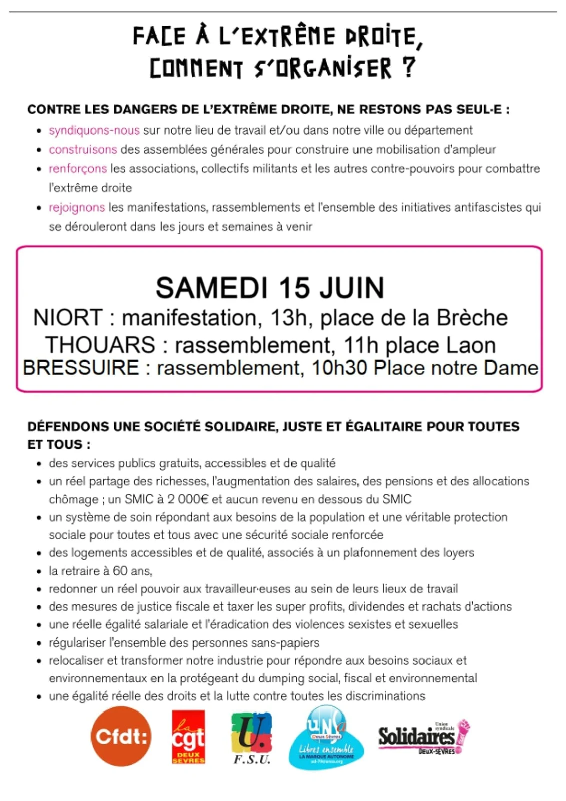

Appel à la mobilisation
Le 15 juin, rendez-vous à Bressuire, Niort et Thouars
Date indiquée par Facebook · 14 juin 2024
Repères éditoriaux
Nous avons relayé l’appel intersyndical aux rassemblements du 15 juin contre l’extrême droite. Les photos et le compte rendu fédéral documentent la mobilisation.
Texte conservé avec la publication
Samedi 15 juin dans les #deuxsevres , comme partout en France, un nouveau #FrontPopulaire se lève face à l'extrême droite.
#bressuire
#niort
#thouars

Sources
Archive rouge · export Facebook · AR-0002-FB-01357
À lire aussi · Le 15 juin, plus de 1 500 manifestants selon le décompte du PCF 79